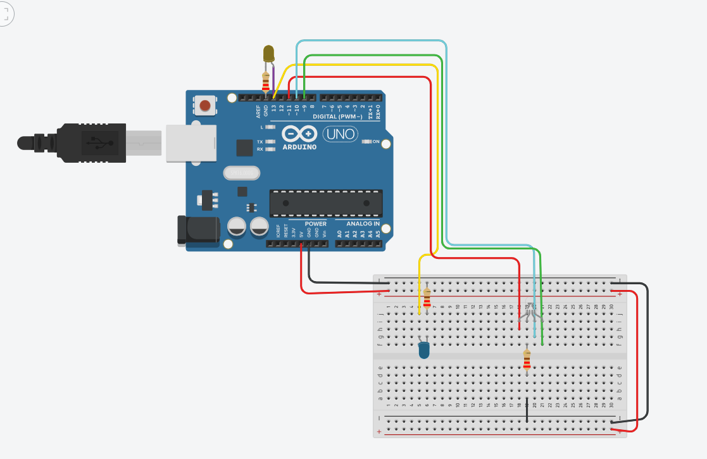

Semana 1: Introducción
Documento completo:
Semana 2: Primer Circuito
Lista de materiales:
- Protoboard
- LED
- Resistencias
- Arduino UNO
Esquema del circuito:

Semana 3: Video del circuito
Se completó el circuito y se programó para que la LED RGB se encendiera en los 3 colores (rojo, azul y verde)..
Semana 4: Video del circuito 4
Se completó el circuito y se programó para que 3 LEDS de diferentes colores (rojo, amarillo y verde) prendan en un orden especifico..
Semana 5: Video del circuito SEMAFORO
Se completó el circuito y se programó para que los diferentes LEDS se encendiera en los 3 colores con un patron específico (verde, rojo, amarillo)..